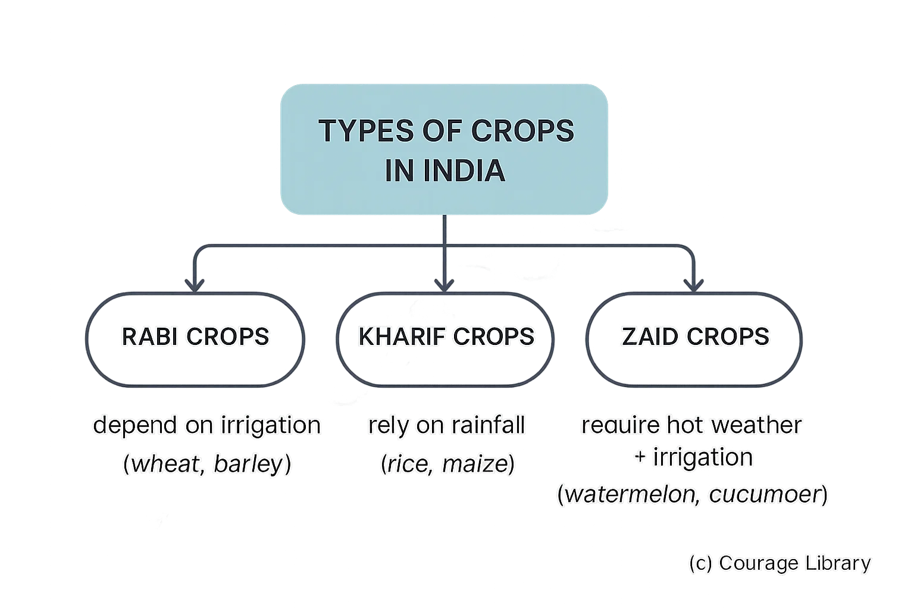

SSC CGL - Detailed Guide 2025
Self-Paced Course
Agriculture in India
Reference: Lucent GK, NCERT Class 6–12
Cropping Seasons in India
India has three major cropping seasons determined by monsoonal cycles:
| Season | Duration | Sowing Time | Harvesting Time | Major Crops |
|---|---|---|---|---|
| Kharif | June – October | With onset of monsoon | Sept–Oct | Rice, Maize, Millets, Cotton, Groundnut, Soybean |
| Rabi | October – March | After monsoon | March–April | Wheat, Barley, Mustard, Peas, Gram |
| Zaid | March – June | After Rabi | Before Kharif | Watermelon, Cucumber, Muskmelon, Vegetables |
- Rabi crops depend on irrigation.
- Kharif crops rely on rainfall.
- Zaid crops require hot weather and irrigation.

Major & Commercial Crops
A. Major Food Crops
| Crop | Climatic Conditions | Leading States |
|---|---|---|
| Rice | High temp (25–35°C), heavy rainfall (>100 cm), clayey soil | WB, UP, Punjab, Chhattisgarh |
| Wheat | Cool temp (10–25°C), moderate rainfall, loamy soil | UP, Punjab, Haryana, MP |
| Maize | Warm climate, moderate water | Karnataka, Bihar, MP |
| Millets (Jowar, Bajra, Ragi) | Drought-resistant, dry areas | Rajasthan, Karnataka, Maharashtra |
B. Commercial Crops
| Crop | Requirements | Producing States |
|---|---|---|
| Cotton | High temp, black soil, moderate rainfall | Maharashtra, Gujarat, Telangana |
| Sugarcane | Hot & humid, high water requirement | UP, Maharashtra, Karnataka |
| Tea | Cool climate with high rainfall | Assam, WB, Kerala, Tamil Nadu |
| Coffee | Warm, moist climate, shade-grown | Karnataka, Kerala, Tamil Nadu |
| Oilseeds | Moderate climate | MP, Rajasthan, Gujarat, Maharashtra |
Plantation Crops: Tea, Coffee, Coconut, Arecanut, Rubber
Irrigation Methods & Sources
A. Major Sources of Irrigation
| Source | Contribution (%) | Regions Dominated |
|---|---|---|
| Tube wells | ~46% | Punjab, UP, Haryana |
| Canals | ~24% | Punjab, Haryana, Rajasthan |
| Tanks | ~3–5% | Tamil Nadu, Karnataka |
| Other sources | Remainder | Rainwater harvesting, springs, etc. |
B. Methods of Irrigation
| Method | Description | Suitable For |
|---|---|---|
| Surface Irrigation | Water flows over fields (canals, tanks) | Rice, Sugarcane |
| Drip Irrigation | Water drips at root zone | Fruit crops, Vegetables |
| Sprinkler | Sprayed over crops like rain | Sandy soil, uneven land |
| Sub-surface | Moisture applied underground | High-tech farming |
Drip and sprinkler systems are part of micro-irrigation — promoted for water-use efficiency.
Agricultural Schemes (Govt. of India)
| Scheme Name | Launched | Objective |
|---|---|---|
| PM-KISAN | 2019 | ₹6000/year to small/marginal farmers via DBT |
| PMFBY | 2016 | Crop insurance against natural calamities |
| Soil Health Card Scheme | 2015 | Issue of soil health cards with nutrient info |
| PMKSY | 2015 | “Har Khet Ko Pani” – improve irrigation coverage |
| e-NAM | 2016 | Online agri-market platform for farmers |
| RKVY | 2007 | Enhance public investment in agriculture |
| NFSM | 2007 | Raise production of rice, wheat, pulses |
| Kisan Credit Card (KCC) | 1998 | Timely credit to farmers for seeds, fertilizers, etc. |
Agriculture in India is a State subject, but many central schemes are implemented via state departments.
Developed By Jan Mohammad
Next
Start Your SSC CGL Journey Now!
Join Courage Library to experience disciplined study and expert support.
Be a Couragian!